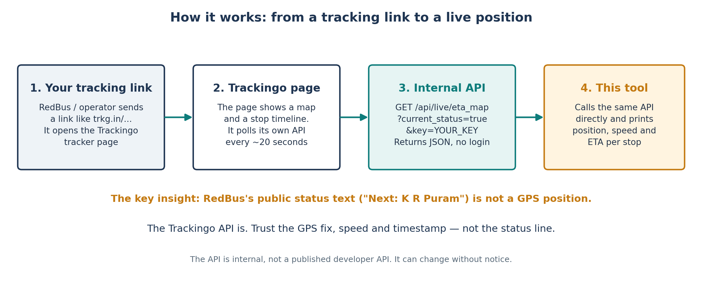
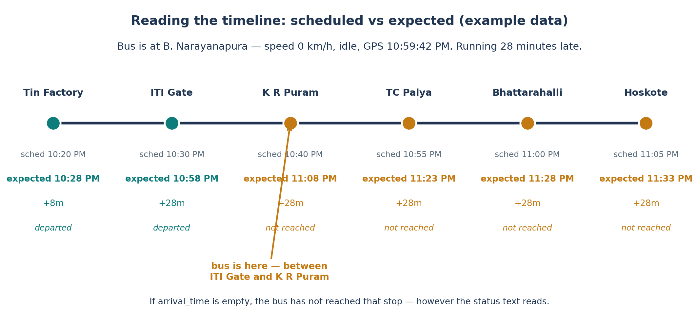
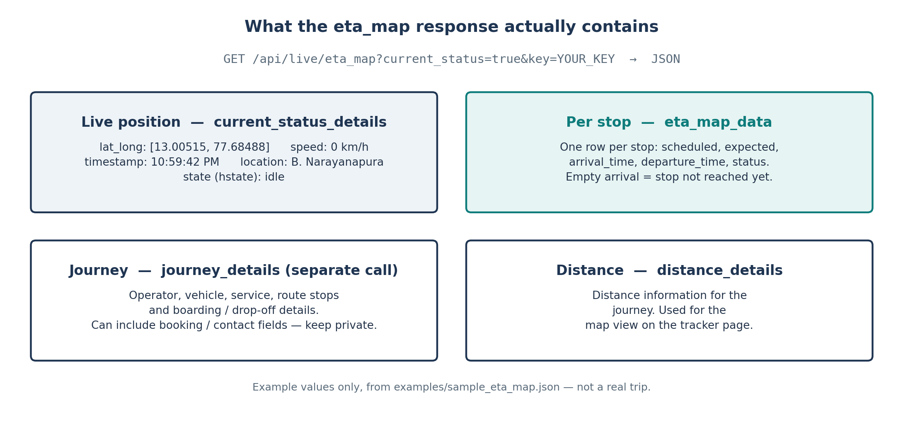

✦ LIVE BUS TRACKING, NO APP REQUIRED
Your bus is late.
Now you can prove it.
When an operator sends you a live-tracking link, the page quietly polls its own API every 20 seconds for the bus's real GPS position. This site asks that same API — and shows you the position, the speed, and the ETA for every stop.
No app to install. No login. Paste your key and watch your bus move.
Free & open source (MIT). Your key never leaves your browser except to fetch your own bus — it is never stored, never logged.
🔴 Live tracker
IdleYour key is the key in your own tracking link. It lives only in this page — nothing is saved, nothing is logged. Journey details may include booking/contact fields, so the proxy strips those before anything reaches your screen.
✦ HOW IT WORKS
Three hops. That's the whole trick.
1
Your operator sends a link
A RedBus booking or the operator's message includes a live-tracking link. It redirects to a Trackingo page: a map and a stop timeline.
2
The page polls its own API
That page asks Trackingo's eta_map endpoint about every 20 seconds for the bus's GPS position, speed and ETAs.
3
This site asks the same API
A tiny serverless proxy calls those same two endpoints with your key and hands the JSON back to this page. No scraping, no login.

Trust the GPS fix,
not the status line.
RedBus's public status is just text — “Next: K R Puram” — and it is easy to read that as “the bus already passed ITI Gate.” It is not a position. The API is GPS: latitude, longitude, speed, a GPS timestamp, a location description.
If a stop's arrival_time is empty, the bus has not reached that stop yet, however the status text reads. In the demo below, the bus sits at 0 km/h, idle, between ITI Gate and K R Puram, 28 minutes late — it has not reached K R Puram or TC Palya.

✦ THE API, IN THE OPEN
Two endpoints. Found in the network tab.
These were found by watching the tracker page's own network requests — they are the site's internal endpoints, not a published developer API. They worked without a login, they may change without notice, and there is no public documentation for them. Use them for your own tracking link, at your own risk, and respect the site's terms.
GET https://bus.trackingo.in/api/live/journey_details?key=<KEY>&zoom_position=12&platform=mobile
GET https://bus.trackingo.in/api/live/eta_map?current_status=true&key=<KEY>
eta_map returns, field by field.| Field | Meaning |
|---|---|
current_status_details.lat_long | [latitude, longitude] |
current_status_details.details.speed | Speed in km/h |
current_status_details.details.timestamp | GPS update time |
current_status_details.details.location | Location description |
current_status_details.details.hstate | Vehicle state, e.g. idle, moving |
eta_map_data | One row per stop: scheduled, expected, arrival_time, departure_time, status |
distance_details | Distance information |
Prefer the command line? The same logic ships as a Python CLI: github.com/NafiGit/trackingo-bus-tracker
✦ GET YOUR KEY
Where's my key?
It is the key in your own tracking link — the short link the operator sends you redirects to bus.trackingo.in/customer/track_vehicle?<KEY>. That key is yours: do not share it, and do not commit it. This site contains only the placeholder YOUR_KEY and clearly labelled example data.
Demo data is fictional — made-up times, stops and positions, to show the response shape. Live data is yours and yours alone.